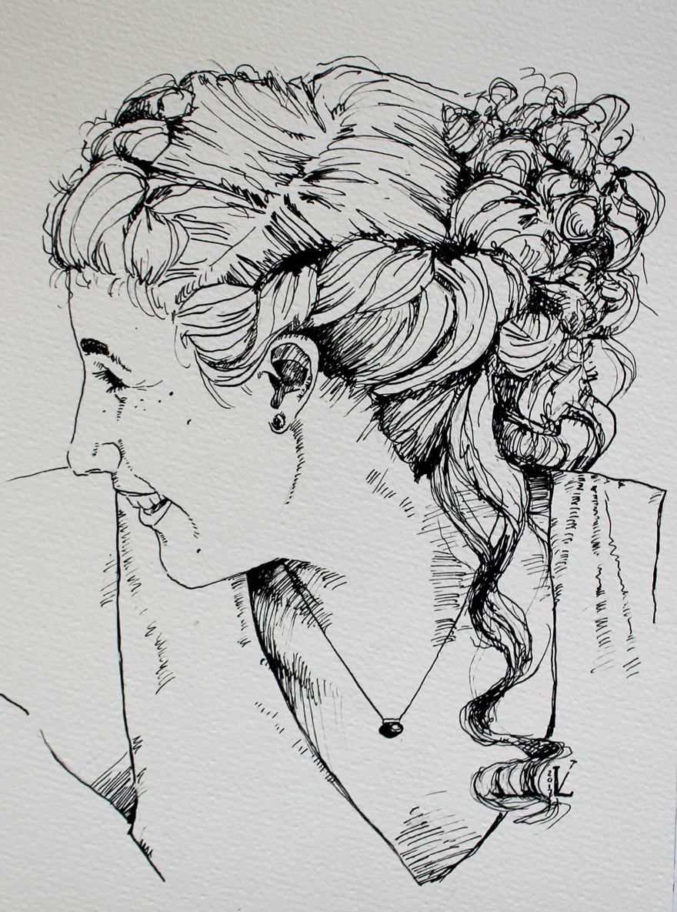

Über mich

Leben
| 2017: | Aktivitäten bei dem Verein Schreibende Schüler e.V. |
| Oktober 2016: | Beginn eines Kommunikationsdesign-Studiums an der HTW Berlin |
| Juli 2015: | Allgemeine Hochschulreife am Gymnasium Carolinum Neustrelitz |
| 2013: | Beginn der ehrenamtlichen Tätigkeit bei der gemeinnützigen Austauschorganisation YFU |
| 2012/2013: | Austauschjahr mit YFU in Estland |
| 2003: | Umzug aufs Land in die Feldberger Seenlandschaft |
| 1996: | Geburt in Berlin |
Kreativieren - Wenn Farben beim Mischen Schlieren ziehen.
Lesen - Wenn Wörter einen mit offenen Augen träumen lässt.
Tanzen - Wenn das Herz im Rythmus der Welt schlägt.
Schreiben - Wenn Geschichten lebendig aus der Hand fließen.
Reisen - Wenn Sonnenstrahlen fremde Orte berühren.
Ehrenamt - Wenn Geben einem das Herz öffnet.